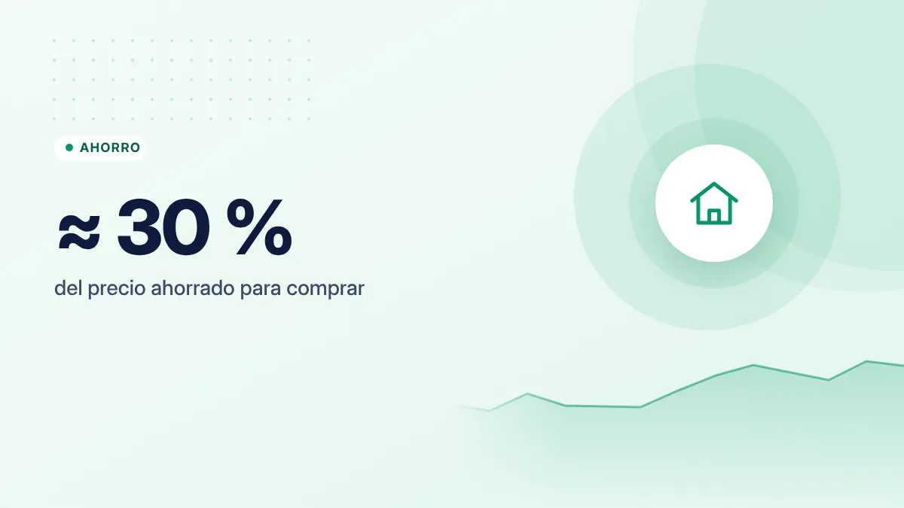

¿Alquilar o comprar vivienda? Las preguntas que debes hacerte antes de decidir
No hay una respuesta universal. Comprar puede ser una gran decisión o un error caro según tu situación, tu ciudad y tus planes.

Puntos clave
- Para comprar necesitas ahorrado, como referencia, en torno al 30 % del precio (entrada más impuestos y gastos).
- Compara el coste total de ambas opciones, no solo la cuota frente al alquiler.
- Comprar tiene más sentido si piensas quedarte muchos años y tu situación es estable.
El error más común: comparar cuota con alquiler
"Pago 900 € de alquiler y la cuota de la hipoteca sería 800 €, así que comprar es más barato". Este razonamiento deja fuera muchos costes. Para comparar de verdad, hay que mirar todo lo que pagas en cada opción.
Lo que cuesta comprar
Antes de entrar a vivir
- Entrada: los bancos suelen financiar como máximo el 80 % del valor de tasación (o del precio, si es menor) para vivienda habitual. El 20 % restante lo pones tú.
- Impuestos: en vivienda de segunda mano pagas el Impuesto de Transmisiones Patrimoniales (ITP), cuyo tipo depende de tu comunidad autónoma. En obra nueva pagas IVA y el Impuesto de Actos Jurídicos Documentados.
- Otros gastos: notaría, registro, tasación, gestoría (los gastos de constitución de la hipoteca los asume mayoritariamente el banco).
Sumando todo, una referencia habitual es tener ahorrado en torno al 30 % del precio de la vivienda. Para un piso de 200.000 €, unos 60.000 €.
Después, cada año
- Cuota de la hipoteca (capital + intereses).
- IBI y tasa de basuras.
- Comunidad de propietarios y posibles derramas.
- Seguro de hogar, obligatorio al menos frente a daños para la hipoteca, y a menudo un seguro de vida vinculado.
- Mantenimiento y reparaciones: caldera, electrodomésticos, pintura… Una referencia prudente es reservar en torno al 1 % del valor de la vivienda al año.
Lo que cuesta alquilar
- Renta mensual y sus actualizaciones.
- Fianza (una mensualidad en vivienda, por ley) y, a veces, garantías adicionales.
- Seguro de hogar de contenido, opcional pero recomendable.
En el alquiler, las reparaciones necesarias para conservar la vivienda en condiciones de habitabilidad corresponden, en general, al propietario.
El coste de oportunidad
Es el factor que más se olvida. Si destinas 60.000 € a la entrada y los gastos, ese dinero deja de estar disponible para otras cosas: tu fondo de emergencia, invertir a largo plazo o afrontar imprevistos. Quien alquila y ahorra o invierte la diferencia de forma disciplinada también construye patrimonio.
La clave está en la palabra disciplinada: comprar obliga a ahorrar (cada cuota amortiza capital), mientras que alquilar exige que tú lo hagas por tu cuenta.
Las preguntas que debes hacerte
1. ¿Cuántos años piensas vivir allí?
Los gastos de compraventa son altos y se pagan una sola vez. Si vendes al cabo de pocos años, es difícil recuperarlos. Como orientación, comprar suele tener más sentido si piensas quedarte muchos años en la misma vivienda.
2. ¿Es estable tu situación laboral y personal?
Una hipoteca es un compromiso de 20 o 30 años. Si tu empleo es inestable, esperas cambiar de ciudad o tu situación familiar puede cambiar, el alquiler te da flexibilidad.
3. ¿Tienes el ahorro necesario sin quedarte a cero?
Si dar la entrada te deja sin colchón, cualquier imprevisto en los primeros años puede convertirse en un problema serio. Mantén tu fondo de emergencia aparte.
4. ¿La cuota es asumible con margen?
Una referencia habitual es que la cuota no supere el 30–35 % de tus ingresos netos. Calcula también qué pasaría si tus ingresos bajaran o, en una hipoteca variable, si subieran los tipos.
5. ¿Cómo es la relación precio de compra / alquiler en tu zona?
Divide el precio de compra entre el alquiler anual de una vivienda equivalente. Si el resultado es muy alto (por ejemplo, más de 25 años de alquiler), en esa zona alquilar suele ser comparativamente más barato. Si es bajo, comprar gana atractivo.
Comprar no es "tirar el dinero" ni alquilar tampoco. Ambas son formas de pagar por un techo. La pregunta es cuál encaja con tus planes y tus números.
Hipoteca fija, variable o mixta
- Fija: la cuota no cambia durante toda la vida del préstamo. Da tranquilidad.
- Variable: la cuota se revisa periódicamente según un índice (normalmente el Euríbor) más un diferencial. Puede bajar o subir.
- Mixta: tipo fijo los primeros años y variable después.
Compara siempre la TAE y el coste total, y revisa los productos vinculados que exige el banco. Te lo explicamos en TIN y TAE.
En resumen
Compara costes totales, no cuota contra alquiler. Ten en cuenta la entrada y los gastos (en torno al 30 % del precio), los gastos anuales de propietario y el coste de oportunidad. Comprar encaja mejor con estabilidad y un horizonte largo; alquilar, con flexibilidad. Antes de firmar una hipoteca, compara varias ofertas y consulta las guías del Banco de España.
Fuentes consultadas
Este artículo es informativo y no constituye asesoramiento financiero, fiscal ni jurídico personalizado. Las cifras son orientativas y pueden cambiar; consulta las fuentes oficiales y, si lo necesitas, a un profesional. Cómo elaboramos nuestras guías.